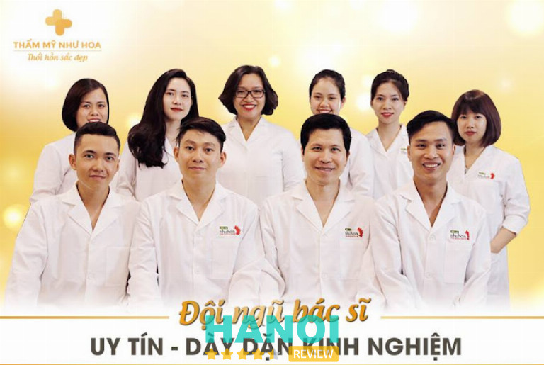
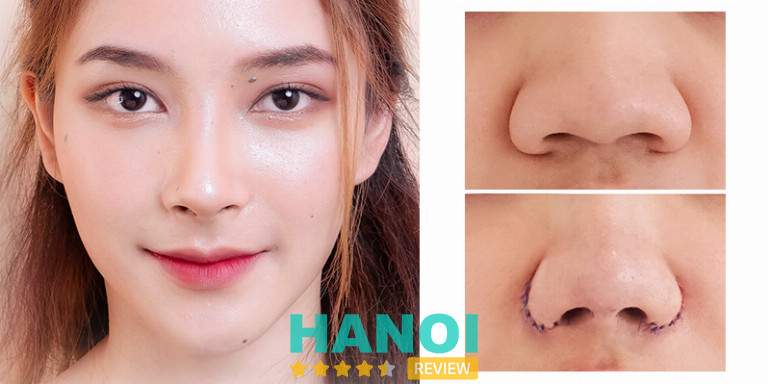
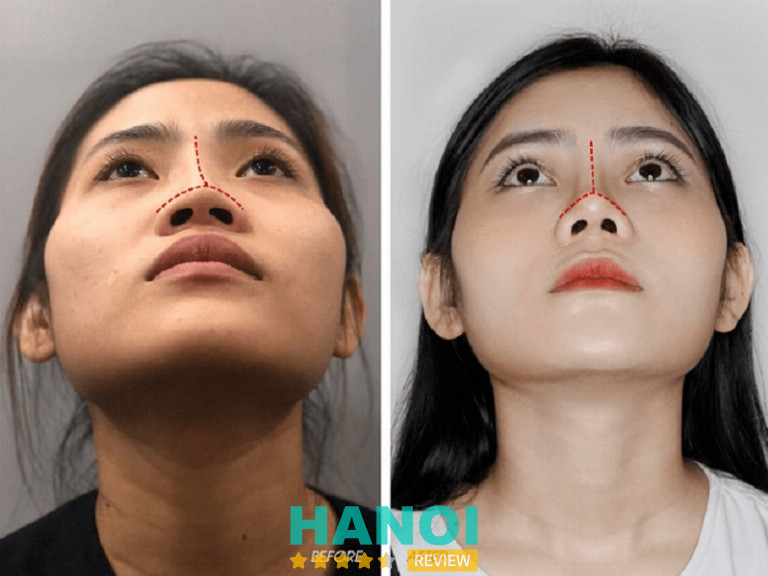

10 Địa chỉ thu gọn cánh mũi tại Hà Nội uy tín bác sĩ tốt
Tuy chỉ là một tiểu phẫu đơn giản, nhưng để đạt được kết quả sửa mũi như ý, tạo được chiếc mũi đẹp và hài hòa với khuôn mặt bạn cần tìm đến những địa chỉ thu gọn cánh mũi uy tín hàng đầu ở Hà Nội với đội ngũ bác sĩ tay nghề cao.
Top 10 Địa chỉ thu gọn cánh mũi ở Hà Nội an toàn nhất
Khi nhu cầu làm đẹp ngày càng tăng lên thì việc thẩm mỹ thu gọn cánh mũi cũng được nhiều chị em quan tâm. Không thể phủ nhận rằng, muốn sở hữu chiếc mũi cao, thon gọn cần phải đến những địa chỉ uy tín.
Giữa hàng ngàn cơ sở làm đẹp ở Hà Nội, nếu bạn có ý định đi thu gọn cánh mũi để tân trang nhan sắc hãy tham khảo những địa chỉ nổi tiếng nhất được tổng hợp sau đây.
Bệnh viện 108
Trải qua hơn 50 năm hình thành và hoạt động trong lĩnh vực khám chữa bệnh, phẫu thuật thẩm mỹ, Khoa phẫu thuật và điều trị theo yêu cầu của Bệnh viện 108 tự hào là đơn vị uy tín, có nhiều kinh nghiệm, được đông đảo khách hàng tin tưởng lựa chọn để thu gọn cánh mũi.
Tại khoa Phẫu thuật thẩm mỹ của Bệnh viện 108 tiến hành rất nhiều dịch vụ thẩm mỹ toàn thân như nâng mũi, thu gọn cánh mũi, cắt mi mắt, căng da mặt, tạo má lúm, độn ngực, treo sa trễ ngực, hút mỡ,…trong số đó thu gọn cánh mũi được nhiều khách hàng đánh giá cao về độ an toàn, hiệu quả.
Bệnh viện 108 tự hào là nơi quy tụ đội ngũ các chuyên gia, bác sĩ thẩm mỹ hàng đầu, giỏi chuyên môn, tay nghề vững vàng, phong cách làm việc chuyên nghiệp và tân tâm với khách hàng.
Đến đây bạn sẽ được các bác sĩ thăm khám tỉ mỉ, xác định tình trạng mũi và nguyên nhân để từ đó đưa ra phương pháp phẫu thuật phù hợp, an toàn nhất.
Ngoài ra, bệnh viện còn trang bị đầy đủ các loại máy móc hiện đại nhất, hệ thống đồng bộ được nhập khẩu từ những quốc gia có phát triển trên thế giới.
Thu gọn cánh mũi ở đây còn được thực hiện theo quy trình khép kín, thời gian tiến hành nhanh chóng, không gây đau đớn, hay để lại sẹo nên khách hàng hoàn toàn có thể yên tâm.
Thông tin liên hệ:
- Địa chỉ: 1 Trần Hưng Đạo, Bạch Đằng, Hai Bà Trưng, Hà Nội
- Điện thoại: 1900 986869
- Email: bvtuqd108@benhvien108.vn
- Website: benhvien108.vn
- Fanpage: FB.com/Benhvientwqd108
Thẩm mỹ Thu Cúc
Luôn đi đầu trong việc ứng dụng các công nghệ thẩm mỹ tiên tiến vào làm đẹp cho khách hàng, Thẩm mỹ Thu Cúc được đông đảo khách hàng lựa chọn là địa chỉ tin cậy để thu gọn cánh mũi.
Đặt sự an toàn và quyền lợi của khách hàng lên trên hết, Thẩm mỹ Thu Cúc luôn nỗ lực phục vụ một cách tốt nhất cả về chất lượng, hiệu quả, độ an toàn cũng như dịch vụ khách hàng để bất kỳ ai đến đây cũng luôn cảm thấy hài lòng.
Hiểu rằng, trình độ và tay nghề bác sĩ là một trong những yếu tố quan trọng quyết định đến việc thành công của ca phẫu thuật thu gọn cánh mũi, vì vậy Thu Cúc chú trọng chọn lọc một đội ngũ bác sĩ chuyên môn cao, vững tay nghề, tận tâm, nhiệt huyết.
Thẩm mỹ Thu Cúc sở hữu cơ sở vật chất vô cùng hiện đại, tiện nghi, hệ thống máy móc thiết bị tiên tiến nhờ đó quá trình thu gọn cánh mũi sẽ diễn ra nhanh chóng, an toàn, chính xác.
Đặc biệt môi trường sạch sẽ, đảm bảo vô trùng tuyệt đối, dịch vụ chăm sóc khách hàng hậu phẫu rất tốt cũng là ưu điểm đem đến sự thoải mái, dễ chịu cho khách hàng.
Chi phí thu gọn cánh mũi ở Thẩm mỹ Thu Cúc được biết đến là khá phải chăng, phù hợp với mọi đối tượng, hơn nữa còn được công khai minh bạch để khách hàng tiện theo dõi và tham khảo.
Thông tin liên hệ:
- Địa chỉ: Tầng 8,9 Số 1B Yết Kiêu, Hoàn Kiếm, Hà Nội.
- Điện thoại: 0964 080 999
- Email: contact@thammythucuc.vn
- Website: thammythucuc.vn
- Fanpage: FB.com/thammythucuc.com.vn
Bệnh viện thẩm mỹ Kangnam
Hội tụ đầy đủ các yếu tố của một cơ sở thẩm mỹ uy tín, chất lượng như tay nghề của bác sĩ, công nghệ, kỹ thuật, máy móc tiên tiến, …Bệnh viện thẩm mỹ Kangnam là địa chỉ tin cậy tiếp theo cho những ai đang muốn thu gọn cánh mũi, tân trang nhan sắc của mình.
Mỗi khách hàng đến đây sẽ được kiểm tra, đánh giá chuyên sâu về cấu trúc khuôn mặt, phác đồ và tư vấn tỉ mỉ về quá trình thu gọn cánh mũi, để có thể tạo ra kết quả tự nhiên và hài hòa với tổng thể khuôn mặt.
Bệnh viện thẩm mỹ Kangnam tự hào là nơi công tác của các bác sĩ đầu ngành, giàu kinh nghiệm, đã thực hiện thẩm mỹ thu gọn cánh mũi thành công, giúp cho hàng nghìn khách hàng sở hữu chiếc mũi thon gọn, tự nhiên.
Toàn bộ quy trình nâng mũi được thực hiện trong điều kiện vô trùng tuyệt đối, các dụng cụ được vệ sinh, sát khuẩn cẩn thận cả trước và sau khi phẫu thuật, đảm bảo an toàn cho khách hàng.
Bên cạnh đó là hệ thống máy móc thiết bị tiên tiến được nhập khẩu trực tiếp từ các nước phát triển như Mỹ, Đức, Pháp, Hàn Quốc,…từ đó hỗ trợ đắc lực cho các bác sĩ để thực hiện thu gọn cánh mũi nhẹ nhàng, nhanh chóng, an toàn.
Đặc biệt, Bệnh viện thẩm mỹ Kangnam còn chú trọng đến trải nghiệm của khách hàng, đội ngũ điều dưỡng luôn tận tâm, chu đáo, hướng dẫn bạn chăm sóc đúng cách sau thu gọn cánh mũi để nhanh chóng hồi phục và có được dáng mũi như mong muốn.
Thông tin liên hệ:
- Địa chỉ: 190A – 190B Đ. Trường Chinh, P. Khương Thượng, Đống Đa, Hà Nội
- Điện thoại: 096 373 22 44
- Website: benhvienthammykangnam.vn
- Fanpage: FB.com/benhvienthammykangnamhanoi
Xem thêm: 10 Địa chỉ nâng mũi tại Hà Nội uy tín, an toàn, bác sĩ giỏi
Thẩm mỹ Như Hoa
Được Sở Y tế cấp giấy phép và chính thức đi vào hoạt động từ năm 2012, Thẩm mỹ Như Hoa là một trong những cơ sở làm đẹp lâu đời, uy tín hàng đầu tại Hà Nội và cũng là điểm đến lý tưởng để bạn thực hiện thu gọn cánh mũi.
Với phương châm “Hết lòng chăm sóc Khách hàng”, Thẩm mỹ Như Hoa nỗ lực mỗi ngày trong việc hoàn thiện, nâng cao chất lượng dịch vụ, chăm sóc khách hàng chu đáo, tận tâm để mang lại trải nghiệm làm đẹp tuyệt vời nhất.
Thu gọn cánh mũi tại Thẩm mỹ Như Hoa sẽ được thực hiện theo quy trình chuẩn y khoa từ việc thăm khám chặt chẽ cả trước và sau phẫu thuật, tư vấn, phẫu thuật và chăm sóc hậu phẫu.

Đến với Thẩm mỹ Như Hoa, bạn sẽ được đồng hành cùng đội ngũ bác sĩ thẩm mỹ tay nghề cao, tâm huyết, trong đó phải kể đến Tiến sĩ thẩm mỹ, Bác sĩ Tống Thanh Hải – chuyên gia phẫu thuật tạo hình thẩm mỹ với gần 20 năm kinh nghiệm.
Đặc biệt, cơ sở này còn ứng dụng công nghệ Hàn Quốc hiện đại, sử dụng máy móc thiết bị tiên tiến, nhờ đó quá tình thu gọn cánh mũi diễn ra nhanh chóng, an toàn, hiệu quả lâu dài.
Thẩm mỹ Như Hoa còn được nhiều khách hàng tin tưởng lựa chọn vì có quy trình làm đẹp đạt tiêu chuẩn của Bộ y tế, khép kín và an toàn tuyệt đối, ngoài ra bạn còn được tư vấn cách chăm sóc để vết thương nhanh lành, tránh biến chứng và rủi ro phát sinh.
Ngoài ra, cơ sở này còn nổi tiếng là địa chỉ cung cấp hơn 80 dịch vụ chăm sóc sắc đẹp phong phú và chất lượng, đáp ứng được nhu cầu làm đẹp ngày càng đa dạng của khách hàng.
Thông tin liên hệ:
- Địa chỉ: 24 Trung Hòa, P. Trung Hòa, Cầu Giấy, Hà Nội
- Điện thoại: 0974 062 222
- Email: thammynhuhoa24@gmail.com
- Website: : thammynhuhoa.vn
- Fanpage: FB.com/thammynhuhoa.vn
Thẩm mỹ viện Hồng Ngọc
Sở hữu hơn 20 năm kinh nghiệm trong lĩnh vực làm đẹp, Thẩm mỹ Bệnh viện Hồng Ngọc luôn là cái tên quen thuộc, được nhiều nhiều tín đồ mê làm đẹp thường xuyên nhắc đến khi muốn cải thiện sắc vóc của mình.
Đặt chân đến Thẩm mỹ viện Hồng Ngọc chắc chắn bạn sẽ ngạc nhiên vô cùng trước một không gian vô cùng rộng rãi, tiện nghi, đầy đủ các phòng ban, quy trình tiếp đón chu đáo, hướng dẫn nhiệt tình đem đến trải nghiệm hoàn hảo.
Được Sở y tế cấp phép hoạt động trong lĩnh vực phẫu thuật thẩm mỹ tạo hình, Thẩm mỹ viện Hồng Ngọc cung cấp đa dạng các dịch vụ làm đẹp như phẫu thuật mắt, phẫu thuật mũi, hút mỡ, trẻ hóa da,…trong đó thu gọn cánh mũi là một trong những tiểu phẫu được thực hiện nhiều nhất.
Điểm nổi bật ở Thẩm mỹ Bệnh viện Hồng Ngọc là ứng dụng công nghệ hiện đại nhất, hệ thống máy móc thiết bị đều là những loại tối tân trên thị trường.
Quy trình thực hiện thu gọn cánh mũi tại đây luôn đảm bảo an toàn, diễn ra trong điều kiện vô trùng khép kín và được thực hiện bởi đội ngũ bác sĩ giỏi, trình độ cao, tận tâm với nghề.
Ngoài ra, Thẩm mỹ viện Hồng Ngọc còn có quy trình chăm sóc hậu phẫu chu đáo, chế độ bảo hành uy tín nên bạn hoàn toàn có thể yên tâm khi lựa chọn nơi đây để thu gọn cánh mũi.
Thông tin liên hệ:
- Địa chỉ: Tầng 5, Số 55 Yên Ninh, Ba Đình, Hà Nội
- Điện thoại: 091 110 32 43
- Email: thammy@hongngochospital.vn
- Website: thammyhongngoc.com
- Fanpage: FB.com/thammyvienhongngoc
Thẩm mỹ viện Vietcharm
Thêm một địa chỉ thu gọn cánh mũi an toàn, uy tín ở Hà Nội mà bạn nên lưu lại chính là Thẩm mỹ viện Vietcharm. Đơn vị được đông đảo khách hàng đánh giá cao về chất lượng dịch vụ.
Bằng việc ứng dụng công nghệ thẩm mỹ tiên tiến, Thẩm mỹ viện Vietcharm đã thành công phẫu thuật thu gọn cánh mũi an toàn, hiệu quả cho hàng nghìn khách hàng để họ tự tin với chiếc mũi đẹp tự nhiên.

Khách hàng đến thu gọn cánh mũi ở đây sẽ được trải nghiệm một không gian làm đẹp cao cấp, tiện nghi, hiện đại, thiết bị máy móc đạt tiêu chuẩn quốc tế.
Tại đây, quy tụ 100% đội ngũ bác sĩ chuyên môn cao, có kinh nghiệm trong ngành thẩm mỹ đặc biệt là thẩm mỹ mũi, nên bạn hoàn toàn có thể tin tưởng và sở hữu chiếc mũi nhỏ gọn ngay sau khi làm mà không cần nghỉ dưỡng hay kiêng khem quá mức.
Không chỉ sở hữu tay nghề cao, các bác sĩ ở Thẩm mỹ viện Vietcharm còn thường xuyên học hỏi, trau dồi thêm kiến thức thông qua các buổi tập huấn, đào tạo chuyên sâu.
Ngoài thu nhỏ cánh mũi, Thẩm mỹ viện Vietcharm còn cung cấp đa dạng các dịch vụ làm đẹp toàn diện với mức giá phải chăng cùng nhiều ưu đãi hấp dẫn để đồng hành cùng mọi người trong hành trình tân trang nhan sắc, gìn giữ thanh xuân.
Thông tin liên hệ:
- Địa chỉ: 305 Kim Mã, Ba Đình, Hà Nội
- Điện thoại: 0911 68 86 66
- Email: thammyvietcharm.305kimma@gmail.com
- Website: vietcharm.com.vn
- Fanpage: FB.com/VietCharmBeauty
Xem thêm: 10 Địa chỉ nâng ngực tại Hà Nội đẹp, uy tín, an toàn nhất
Viện thẩm mỹ Quốc tế Dr. Han
Với sứ mệnh giữ gìn và tôn vinh vẻ đẹp Việt, Viện thẩm mỹ Quốc tế Dr. Han ra đời và là thương hiệu thẩm mỹ uy tín bậc nhất về chăm sóc sắc đẹp toàn diện tại Việt Nam.
Thấu hiểu nỗi lo lắng của khách hàng khi đi làm đẹp, viện thẩm mỹ này nỗ lực nâng cao chất lượng dịch vụ đồng thời thường xuyên cập nhật các kiến thức, phương pháp làm đẹp tiên tiến trên thế giới để mang lại vẻ đẹp tươi trẻ, hoàn mỹ và toàn diện cho tất cả mọi người.
Viện thẩm mỹ Quốc tế Dr. Han được được ví như một thiên đường chăm sóc sức khỏe làm đẹp tin cậy cho nhiều khách hàng trong và ngoài nước. Nơi đây cung cấp đa dạng các dịch vụ làm đẹp từ đơn giản đến phức tạp, thẩm mỹ không xâm lấn và phẫu thuật thẩm mỹ.
Nói đến thu gọn cánh mũi, Viện thẩm mỹ Quốc tế Dr. Han tự tin giúp khắc phục triệt để khuyết điểm cánh mũi to, thô, mũi hếch, đầu mũi bè, mũi tẹt, đem đến cho bạn chiếc mũi thon gọn, xinh xắn, hài hòa với khuôn mặt.
Điểm nổi bật nhất của cơ sở này là có đội ngũ các chuyên gia đầu ngành, đã thực hiện thành công hàng nghìn ca phẫu thuật phức tạp, đặc biệt tận tâm, luôn sẵn sàng lắng nghe, giải đáp mọi thắc mắc của khách hàng.
Bên cạnh đó Viện thẩm mỹ Quốc tế Dr. Han còn sở hữu toàn bộ công nghệ, máy móc, thiết bị, nguyên vật liệu thẩm mỹ đạt chuẩn Hoa Kỳ, do vậy chỉ sau khoảng 30- 40 phút thực hiện bạn đã có chiếc mũi ưng ý mà không mất nhiều thời gian nghỉ dưỡng.
Đặc biệt quy trình thu gọn cánh mũi ở đây được thực hiện trong môi trường khép kín, đảm bảo vô trùng tuyệt đối, giúp bạn yên tâm không lo biến chứng sau phẫu thuật.
Thông tin liên hệ:
- Trụ sở chính: Tầng 44, Tòa C5 Vincom Trần Duy Hưng tại Số 119 Đường Trần Duy Hưng, Hà Nội
- Điện thoại: 1900 2323 93
- Email: cskh@drhan.vn
- Website: drhan.vn
- Fanpage: FB.com/DrHan.vn
Viện thẩm mỹ y khoa Dr. Hải Lê
Nếu bạn đang cảm thấy thiếu tự tin vì chiếc mũi tẹt, cánh mũi to, đầu mũi bè hãy đến ngay với Viện thẩm mỹ y khoa Dr. Hải Lê – nơi đem đến các liệu pháp làm đẹp an toàn, hiệu quả lâu dài.
Với Viện thẩm mỹ y khoa Dr. Hải Lê, sự tin tưởng và hài lòng của khách hàng luôn là tiêu chí phấn đấu hàng đầu. Vì vậy ngay từ khi được thành lập cho đến nay cơ sở này nỗ lực không ngừng trong việc hoàn thiện và nâng cao chất lượng dịch vụ.
Chính vì sự cố gắng không ngừng nghỉ mà viện thẩm mỹ này đã vinh dự nhận đạt được nhiều thành tựu vượt trội như Top Viện thẩm mỹ được yêu thích nhất, giải thưởng dịch vụ tạo hình thẩm mỹ mũi đẹp và an toàn 2018, Top thương hiệu tại Việt Nam, giải thưởng dịch vụ Cắt mí đẹp nhất,…
Mọi dịch vụ làm đẹp ở Viện thẩm mỹ y khoa Dr. Hải Lê đều tuân thủ theo các quy trình y khoa chuẩn mực của Bộ Y tế, với thu gọn cánh mũi, khách hàng đến đây sẽ được thăm khám, tư vấn, xác định tình trạng mũi và đưa ra phương pháp phù hợp.
Đồng hành cùng bạn trong quá trình thu gọn cánh mũi là đội ngũ y bác sĩ giỏi, tay nghề vững vàng, sẵn sàng lắng nghe, tư vấn và giải đáp mọi thắc mắc của khách hàng.
Ngoài ra, cơ sở này còn tiên phong trong việc cập nhật công nghệ tiên tiến hàng đầu thế giới, từ đó đem đến nhiều giải pháp làm đẹp tối ưu, an toàn, hiệu quả, tiết kiệm thời gian, chi phí.
Thông tin liên hệ:
- Địa chỉ: 314 Phố Huế, Hai Bà Trưng, Hà Nội
- Điện thoại: 039 2636 999
- Website: drhaile.vn
- Fanpage: FB.com/314phohue.haile
Thẩm mỹ Beauty Center By Tấm
Thẩm mỹ Beauty Center By Tấm là một trong những thẩm mỹ viện nổi tiếng hàng đầu tại Việt Nam, cung cấp đa dạng các dịch vụ làm đẹp, trong đó thu gọn cánh mũi được nhiều “tín đồ mê làm đẹp” hết lời khen ngợi nhờ chất lượng, hiệu quả, an toàn.
Thẩm mỹ Beauty Center By Tấm đáp ứng đầy đủ các tiêu chí khắt khe về sự an toàn và quy định do Bộ Y Tế đưa ra do vậy khi lựa chọn thu gọn cánh mũi ở cơ sở này khách hàng có thể yên tâm về kết quả, không lo bị biến chứng.
Những lý do chính khiến khách hàng tin tưởng chọn thu gọn cánh mũi tại Thẩm mỹ Beauty Center By Tấm:
- Là đơn vị thẩm mỹ đạt tiêu chuẩn của Bộ Y tế, đã được cấp phép thực hiện các dịch vụ phẫu thuật thẩm mỹ.
- Sở hữu đội ngũ bác sĩ chuyên môn cao, nhiều kinh nghiệm trong lĩnh vực làm đẹp đặc biệt là phẫu thuật mũi.
- Chú trọng đầu tư hệ thống máy móc, thiết bị tiên tiến hàng đầu.
- Cơ sở vật chất hiện đại, tiện nghi, yếu tố vô trùng được đảm bảo nghiêm ngặt.
- Chế độ hậu phẫu tận tâm, chu đáo, bảo hành ui tín.
- Chi phí phải chăng, công khai rõ ràng để khách hàng dễ dàng tham khảo.
- Tiên phong cập nhật công nghệ tiên tiến, mới mẻ hàng đầu để ứng dụng trong công tác làm đẹp.
Ngoài ra, sau khi hoàn thành quá trình thu gọn cánh mũi ở Thẩm mỹ Beauty Center By Tấm bạn sẽ được nghỉ ngơi, theo dõi sức khỏe thêm, bác sĩ sẽ tiến hành kiểm tra lại vết thương, hướng dẫn chăm sóc tại nhà đúng cách để nhanh hồi phục, hạn chế biến chứng.
Với một loạt các ưu điểm trên đây có thể khẳng định Thẩm mỹ Beauty Center By Tấm là điểm đến đáng tin cậy để bạn có thể gửi gắm niềm tin và sở hữu chiếc mũi đẹp xinh, tự nhiên.
Thông tin liên hệ:
- Địa chỉ: 3 Thi Sách, Phạm Đình Hổ, Hai Bà Trưng, Hà Nội
- Điện thoại: 0966 605 600
- Email: marketing.tambeauty@gmail.com
- Website: thammyvientam.com
- Fanpage: FB.com/thammybeautycenterbytam
Xem thêm: 10 Thẩm mỹ viện tại Hà Nội uy tín, dịch vụ tốt, bác sĩ mát tay
Thẩm mỹ viện Bác sĩ Hà Thanh
Chọn đúng cơ sở làm đẹp uy tín, bác sĩ có tay nghề cao sẽ giúp bạn nhanh chóng có được dáng mũi thanh tú, tự nhiên, không bị biến chứng sau phẫu thuật và Thẩm mỹ viện Bác sĩ Hà Thanh là một địa chỉ đáp ứng được những yêu cầu ấy.
Đặt sự an toàn và quyền lợi của khách lên hàng đầu, Thẩm mỹ viện Bác sĩ Hà Thanh ứng dụng công nghệ hiện đại, cập nhật những phương pháp làm đẹp tiên tiến đồng thời không ngừng hoàn thiện và nâng cao chất lượng dịch vụ của mình.

Với đội ngũ bác sĩ có tay nghề cao, giàu kinh nghiệm, nên quá trình thu gọn cánh mũi tại Thẩm mỹ viện Bác sĩ Hà Thanh chỉ diễn ra trong khoảng 30 phút, giúp khắc phục mọi khuyết điểm cánh mũi bè, thô và dày mà không lộ sẹo và dấu vết phẫu thuật.
Bên cạnh đó hệ thống thống cơ sở vật chất, thiết bị hiện đại, sang trọng bậc nhất cũng góp phần đem đến trải nghiệm thoải mái, dễ chịu cho khách hàng.
Với Thẩm mỹ viện Bác sĩ Hà Thanh “Đẹp nhưng phải an toàn”, vì vậy cơ sở này cam kết mọi quá tình làm đẹp đều được thực hiện trong môi trường khép kín, vô trùng tuyệt đối, nên bạn yên tâm không lo biến chứng sau phẫu thuật.
Thẩm mỹ viện Bác sĩ Hà Thanh cũng chú trọng đến quá trình chăm sóc hậu phẫu. Đội ngũ điều dưỡng và nhân viên chăm sóc sẽ đảm bảo rằng khách hàng nhận được sự điều trị và chăm sóc toàn diện để phục hồi nhanh chóng.
Thông tin liên hệ:
- Địa chỉ: 75 Vũ Ngọc Phan, Đống Đa, Hà Nội
- Điện thoại: 0986 222 911
- Email: thammybacsihathanh@gmail.com
- Website: thammybacsihathanh.com
- Fanpage: FB.com/myvienhathanh
6 Lưu ý cần nhớ để tránh chọn nhầm địa chỉ thu gọn cánh mũi kém uy tín ở Hà Nội.
Từ lâu, thu gọn cánh mũi được rất nhiều chị em phụ nữ lựa chọn và mong muốn chiếc mũi trở nên thon gọn, cân đối, hài hoà. Nếu đang có ý định trùng lại chiếc mũi của mình, bạn nên tìm đến những địa chỉ thu gọn cánh mũi uy tín ở Hà Nội để được thăm khám kỹ lưỡng.
Dưới đây là 6 lưu ý quan trọng bạn cần nắm rõ để tránh chọn nhầm cơ sở kém chất lượng:
- Kiểm tra uy tín và giấy phép hoạt động: Trước tiên hãy tìm hiểu xem cơ sở bạn chọn có đầy đủ phép hoạt động từ cơ quan có thẩm quyền không. Hãy tham khảo các phản hồi, đánh giá của khách hàng trước đó trên các trang mạng xã hội hay người thân bạn bè sẽ giúp bạn trong việc đưa ra quyết định đúng đắn.
- Đội ngũ bác sĩ thẩm mỹ: Một trong các tiêu chí quan trọng hàng đầu khi chọn địa chỉ thu gọn cánh mũi là đội ngũ bác sĩ giỏi chuyên môn, giàu kinh nghiệm như vậy sẽ đảm bảo quá trình làm đẹp của bạn được thành công, an toàn.
- Công nghệ và trang thiết bị hiện đại: Nên chọn cơ sở chú trọng đầu tư hệ thống máy móc, thiết bị hiện đai như vậy sẽ giúp các bác sĩ thực hiện thu gọn cánh mũi một cách nhanh chóng, chính xác, hiệu quả cao.
- Cơ sở vật chất và môi trường: Một địa chỉ thẩm mỹ thu gọn cánh mũi uy tín sẽ xây dựng môi trường làm đẹp chuyên nghiệp, sang trọng, tiện nghi, đảm bảo vô trùng tuyệt đối, như vậy sẽ tạo sự dễ chịu cũng như tâm lý thoải mái, yên tâm cho khách hàng.
- Giá cả phải chăng: Hãy so sánh, tham khảo mức giá trước khi lựa chọn để đảm bảo chọn được cơ sở có mức chi phí thu gọn cánh mũi phải chăng, phù hợp với điều kiện của bạn.
- Chế độ chăm sóc hậu phẫu chu đáo: Một trong những yếu tố quan trọng khác đó là dịch vụ chăm sóc khách hàng chu đáo sau phẫu thuật như vậy sẽ giúp vết thương của bạn nhanh lành, hạn chế biến chứng có thể xảy ra.
Mũi là bộ phận chính giữa ngũ quan, một chiếc mũi cao sẽ là điểm nhấn cho gương mặt. Phẫu thuật thu gọn cánh mũi ở những cở sở làm đẹp uy tín sẽ là giải pháp hoàn hảo giúp bạn có được khuôn mặt đẹp, tăng sự tự tin trong cuộc sống hàng ngày.
Có thể bạn quan tâm
- 10 Địa chỉ triệt lông tại Hà Nội vĩnh viễn không mọc lại
- 10 Bác sĩ phẫu thuật thẩm mỹ tại Hà Nội giỏi, mát tay nhất
- 10 Địa chỉ trị sẹo (lồi, lõm, rỗ,…) tại Hà Nội uy tín nhất
- 10 Địa chỉ hạ gò má tại Hà Nội đẹp, uy tín và an toàn nhất
DOANH NGHIỆP: Đăng tải thông tin MIỄN PHÍ.
Tin đọc nhiều


10 Địa chỉ phun môi ở Hà Nội đẹp tự nhiên, lên màu chuẩn
Nếu muốn cải thiện tình trạng môi tái nhợt, thâm sạm, thiếu sức sống thì bạn có thể tìm tới các địa chỉ phun môi...

5 Địa chỉ điêu khắc lông mày nam tại Hà Nội đẹp, hợp phong thuỷ
Một cặp chân mày đẹp không chỉ làm tăng thêm sự cuốn hút mà còn thể hiện rõ nét nam tính cho phái mạnh. Vì...

7 Địa chỉ tiêm Meso căng bóng da tại Hà Nội an toàn, uy tín
Sở hữu làn da căng bóng, mịn màng luôn là mơ ước của rất nhiều chị em và phương pháp tiêm Meso đã trở thành...

Trở thành người đầu tiên bình luận cho bài viết này!